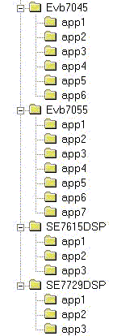

The
Sample Tutorials are organised in the folder 'Samples'. The following diagram
gives an idea about the directory structure.

(Diagram
1)
The
'Samples' folder contains four sub-folders: EVB7045, EVB7055, SE7615DSP and
SE7729DSP. Each of these four sub-folders contains one folder per application.
The
folder 'EVB7045' contains 6 applications, folder 'EVB7055 contains 7
applications, folder 'SE7615DSP' contains 3 applications and the folder 'SE7729DSP'
contains 3 applications. All these applications are based on Renesas Evaluation Boards EVB7045, EVB7055 and Renesas Solution Engine Boards SE7615DSP and SE7729DSP.
The
'Sample.txt' file in each of these folders gives information about the applications
in brief. Every application folder contains a 'README' file. This 'README' file
gives details of the files, which make up this application.
A
beginner can use application 'app1' in 'EVB7045' folder for getting started
with coding. This application provides a basic program for SH2 series. If the
user wants to use library functions, then appropriate libraries should be
linked.
NOTE:
Some
of the programs contain code specific to these target hardware. In case you are
using different hardware then proper I/O and memory mapping should be used.
To
Execute the Samples:
To
build / run the samples, from <Start menu> select <GNUSH> program
folder and then select the desired tool chain. This will open the command
prompt window and will also set the required environment variables along with
the PATH of the tool chain.
Every
application folder contains a makefile for building
the project. This makefile should be used to generate
final binary while using the appropriate tool chain.
Go
to the application folder that you wish to build and run the make utility to
build the application for the tool chain.
For
example, if you have selected sh-elf tool chain from
program folder then go to \Samples\App1 for building the application. You need
to use the 'make' utility provided with this tool chain to build the
application.
NOTE:
Before
building an application, please ensure that the tool chain you are going to use
is in the PATH. Normally, your installation program will take care of this.
However, we suggest that the user ensure this once again.
To
download *.mot files to the EVB:
For
Windows-based systems, Flash Development Toolkit may be used. This is available
on http://www2.eu.renesas.com/products/mpumcu/tool/fdt/support.html.
For
Linux-based systems, HFlash 1.0 may be used. This is
available on http://www.kpitgnutools.com.
To
download *.mot files to the Solution Engine Boards:
The
on-board Monitor needs to be used for flashing the *.mot file. Please refer to
Solution Engine Board documentation for further information.
Using
simulators:
The
tool chain is provided with simulators. Please refer to the FAQ for how to use
simulators.
To
debug the programs:
Every
sample application provided with the tool chain is written to run from FLASH.
Every application folder contains an additional linker script with extension *.ram.lnk. This linker script should be used to build the
application in case the user wants to subsequently debug the application using
a debugger.
NOTE:
1. While
running a program from a debugger, you may have to bypass the hardware
initialisation routine as hardware is already initialised by the debugger stub.
The application’s initialisation may conflict with the debugger’s hardware
settings.
2. If
the sample program is accessing a serial port, it is possible that the debugger
is also using the same serial port to communicate with the hardware. In that
case you may have to switch to an alternate serial port.
3. For
samples using interrupts, you may have to relocate the vector table to RAM.
Please refer to the debugger manual for further details.
We
have used the HDI. By default HDI may not support COFF debug format (This is
used in GNUSH). You may need to apply the patch available at http://www2.eu.renesas.com/products/mpumcu/tool/hdi/download/hdio02q2.zip.
NOTE:
While
debugging the application, please ensure that you are using the correct debug
format and that your debugger supports the format. For sh-elf
tool chain you may use dwarf-2 format. Depending upon the debug format to be
used, you may need to change the compiler / linker options in the make file and
rebuild the application. E.G. For using dwarf format, you may use -gdwarf-2
option. Please refer FAQ for more details.
Should
you need any help, please submit your support request via web-based Support
Request System (SRS) available at http://www.kpitgnutools.com.
We
hope that you find GNUSH beneficial to your development.